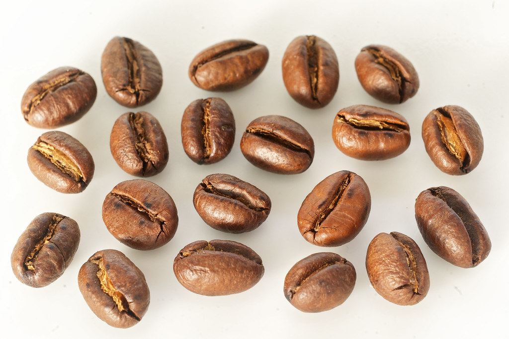

Beans
Where is my coffee from?
Two Main Types
Arabia (Coffee arabica) and Robusta (Coffee caniphora)
Roasted Robusta Coffee
There are 10 steps before you can have your morning cup of 'Joe.'
Step 1: Plant coffee beans, the “seed”
Step 2: Harvest the plant. Usually one large harvest per year, but each coffee tree will only produce viable fruit every 3-4 years. Coffee is a slow process. It tends to be picked by hand in a very laborious process.
Step 3: Process the cherries. There are two ways – dry or wet. The dry method is the cheapest and has been traditionally used to ensure the cherries only hold 11% of their moisture. This process can take several weeks to do and is highly dependent on hot, dry weather. The second way, the wet method, requires more machinery. The machines remove the pulp from the cherries and then are separated by weight. Afterwards, the cherries are placed in fermentation tanks for 12 to 48 hours, depending on altitude and climate. The objective of this process to obtain a rough bean.